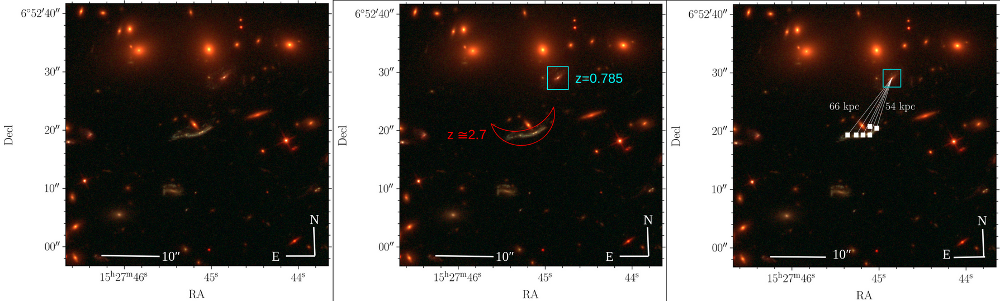

about
I am as Postdoctoral Research Scholar at the physics department at NC State University, Raleigh, NC, USA.
I am currently working with Dr. Rongmon Bordoloi
on topics in observational astrophysics related to galaxy evolution, using strong gravitational
lensing as a natural cosmic telescope. In addition, I mainly use integral field unit
spectroscopy (IFU) observations to study the role of galactic outflows (or winds) in
galaxy formation and evolution. I am also interested in statistics, mathematics, and
the applications of artificial intelligence (AI) in physics and astronomy. I enjoy
teaching physics and mentoring students.
I completed my PhD in Physics from NC State University in November 2024 under
the supervision of Dr. Rongmon Bordoloi,
with the thesis title "Spatially Resolved Galactic Outflows in Gravitationally Lensed Galaxies".
I earned my Master of Science degree in Physics from NC State University in 2020.
Prior to that, I obtained my Bachelor's degree in Physics with a concentration in Astrophysics
from the University of Science and Technology at Zewail City, Egypt.
research
I am working on understanding the role of galactic outflows
(or winds) as a feedback mechanism that regulates star formation
in galaxies and ejects mass and metals to the surronding circumgalactic medimum (CGM) and
beyond to the intergalactic medium IGM. I am mainly interested in studying the outflows
in high-redshift galaxy at z ~ 1.5-3.5. In this redshift range, the star formation within
galaxies was at its peak. I leverage the phenomenon of gravitational lensing to spatially
resolve the properties of these outflows and study how they are related to the star-forming
regions generating them. The figure below shows an example of one of these lensed galaxies,
RCS032727-132609, at z ~ 1.7. On the left panel, we present observations from the Multi-Unit
Spectroscopic Explorer ( MUSE)
integral field unit (IFU)
spectrograph. On the right panel, we present the observations of the same galaxy from
Hubble Space Telescope. The figure is from
Shaban et al. 2022.

Spatially Resolved Galactic Outflows
Galactic outflows (or winds) are one of the important feedback mechansims in galaxy evolution.
By using the phenomena of strong gravitational lesning, we can observe galactic winds (outflows)
at high redshift and estimate their geometry and morphology. The left panel of the below figure
shows the outflow velocities versus the area of the different regions of the lensed galaxy
RCS032727-132609 at z = 1.703 that is shown in the source plane in the right panel. The different
colors represent different regions, while the red square represent the value for the whole galaxy.
You can read more about that in our recent paper
Shaban et al. 2023.
Gravitational Lensing Tomography
In this method, we use the distorted images of the gravitationally lensed background galaxies
to probe the the faint CGM of foreground galaxies. The light of the continuous extended arcs
of these lensed galaxies provide us with information about the small scale variations within
small size region of the CGM of foreground systems. Such an informaiton will constrain the
models and simulations of galaxy formation and evolution. The figure below shows an example of
this method where we probe the CGM of a foreground at z ~ 0.8 with a background lensed galaxy
at z ~ 2.8 in the shape of extended arc. This work has been submitted to The Astrophysical Journal (ApJ)
[Shaban et. al. 2025].Image Credit: Ahmed Shaban

Lensed Quasar Sightlines as a Probe of the CGM
The multiple sightlines of the quad images of a background quasar lensed by foreground cluster can
be used to probe the gaseous halos around the galaxies, a.k.a the circumgalactic medium (CGM). We
can constrain the physical properties of the CGM using this method. This will help to give a better
picture of the role of the CGM in the evolution of galaxies. The figure below shows the lensed
quasar system J1004+4112 using observations from the Keck Cosmic Web Imager
( KCWI) IFU in the left panel and from Hubble Space
Telescope (HST) in the right panel. The spectra of images A, B, C, and D of the quasar contains
information about the absorption lines in the CGM of the galaxies G1, G2, and G3 of the
foreground galaxy cluster. Image Credit: Ahmed Shaban

Astrostatistics
Astrostatistics is an interdisciplinary field that merges astronomy and statistics to analyze and interpret
the vast amounts of data generated by modern telescopes and surveys. By employing statistical methods, data mining,
machine learning, time series analysis, spatial statistics, and Bayesian inference, astrostatistics helps
astronomers uncover patterns, test hypotheses, and make scientific discoveries from complex datasets.
This field is crucial for managing data from instruments like the Hubble Space Telescope (HST), James Webb
Space Telescope (JWST), and the upcoming Vera Rubin Observatory, enabling researchers to advance our understanding of the universe.
In a research study that was led by
the Statistics department at NC State, we performed an assessment of classical period finding methods like
phase-dispersion minimization (PDM),
analysis of variance (AOV),
string-length (SL), and
Lomb-Scargle (LS) power statistics in time series observations in astronomy.
This work got published at Reports on Progress in Physics.
publications
- A. Shaban, R. Bordoloi, J. O'Meara, et al., ''Spatially Resolved Circumgalactic Medium Around a Star-Forming Galaxy Driving a Galactic Outflow at z ≈ 0.8'', Submitted to
The Astrophysical Journal (ApJ), arXiv e-print: 2501.17940.
- N. Giertych, A. Shaban, P. Haravu, & J. P. Williams, ''A Statistical Primer
on Classical Period-Finding Techniques in Astronomy'', Reports on Progress in Physics (2024): 87 (7), 078401.
- A. Shaban, R. Bordoloi, J. Chisholm, et al., ''Dissecting a 30 kpc Galactic Outflow
at z ~ 1.7'', Monthly Notices of the Royal Astronomical Society (MNRAS), (2023): 526 (4), 6297.
- A. Shaban, R. Bordoloi, J. Chisholm, et al., ''A 30 kpc Spatially Extended Clumpy
and Asymmetric Galactic Outflow at z ~ 1.7'', The Astrophysical Journal, (2022): 936 (1), 77.
- R. Bordoloi, J. M. O'Meara, K. Sharon, J. R. Rigby, J. Cooke, A. Shaban,
et al., ''Resolving the H I in damped Lyman α systems that power star formation'', Nature, (2022): 606, pages 59-63.
teaching
I have experience in teaching undergraduate and graduate level physics and astronomy classes to diverse
groups of stduents in lectures, labs, and during one-on-one tutoring sessions. Here is a list of the
classes that I taught before:
- Spring 2025: Guest Lecturer for PY543 (Graduate Astrophysics), NC State University, USA.
- Fall 2022: Teaching Assistant and guest lecturer for
PY124
(solar system astronomy class), NC State University, USA.
- Fall 2021 & 2022: Training students on how to use telescopes in PY542 (Senior Physics Lab),
NC State University, USA.
- Summer 2022: Curriculum development for PY 101, NC State University, USA.
- Spring 2022: Teaching Assistant for PY543 (Graduate Astrophysics), NC State University, USA.
- Fall 2021 & Spring 2019: Instructor for PY209
(E&M Lab), NC State University, USA.
- Spring 2019: Tutor at the Physics Tutorial Center (PTC), NC State University, USA.
- Fall 2018: Online tutor for PY208
(E&M) class, NC State University, USA.
- Spring 2018: Teaching Assistant for PEU331 (Stellar Structure & Evolution),
Zewail City of Science and Technology, Egypt.
Contact
outreach
Public Outreach:
- Organizing a star gazing event at NC State University. (October 2024)
- Juror at The 2024 US Invitational Young Physicists Tournament, Raleigh, NC. (Feburary 2024)
- Volunteer at the astronomy days event at NC Museum of Natural Sciences. (January 2023)
- Organizing a star gazing event in Oak island for the Egyptian students at NC State University.
(September 2022)
- Organizing an event to observe the 2019 Transit of Mercury at NC State Unviersity.
(November 2019)
Press Releases